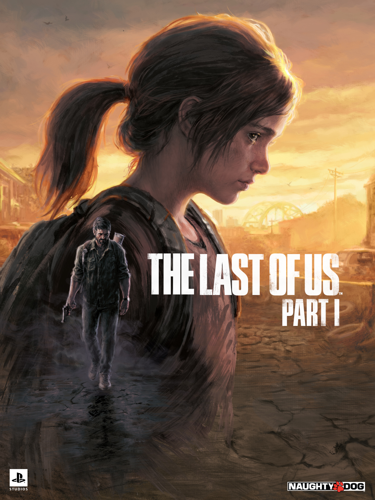
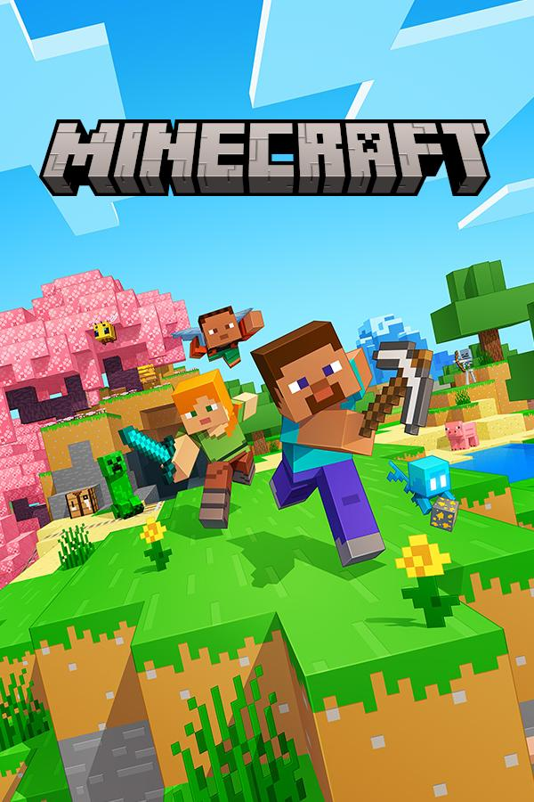
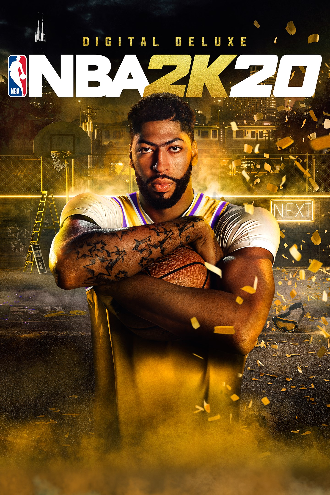
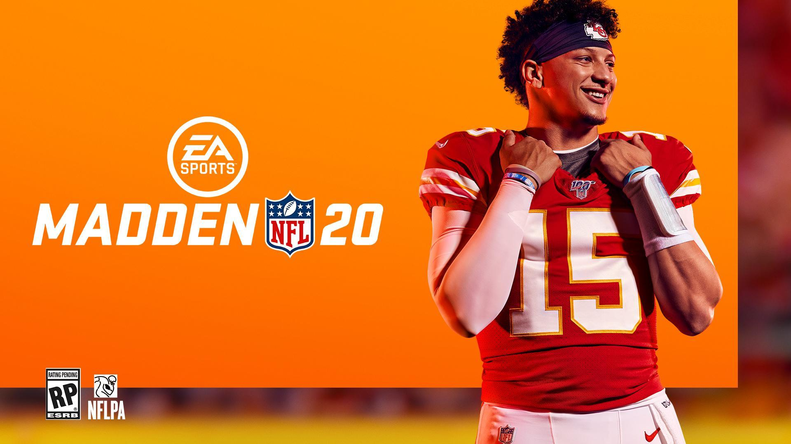

My Favorite Video Games of All Time
This is a collection of my favorite games I have ever played. I have played video games since I was a child and they are a very important and influential part of my life. I have met many of my friends on these games and have positive interactions with people from the communities these games created. These games brought me a lot of enjoyable memories and experiences in my life and provide an escape from the real world for me to relax and have fun.
.jpg)
Red Dead Redemption II
Game | 2018 | Action-adventure | Rockstar Games
This is my favorite game of all time that I have ever played. The level of detail in the world and the story is what sets this game apart from all the others. I have replayed this game entirely twice and both times I struggled to put the controller down and stop playing. The story is one of the few I have ever played that actually makes me emotional because of how connected you feel to the crew and the main character you play as, Arthur Morgan.

The Last of Us
Game | 2013 | Action-adventure | Naughty Dog
This game was one of my first introductions to single player adventure games and it left a lasting impression on me. The story of the game to me was the strongest quality of the game, as you get really emotionally invested in the relationship between Joel and Ellie. This game also being a "horror" game also adds a thrilling aspect to the gameplay that helped keep my fully engaged and on the edge of my seat throughout my time playing the game.

Minecraft
Game | 2011 | Sandbox Survival | Mojang
This game is one of my favorites because of the never-ending replayability and creative freedom it offers. This game can be played by people of any age for countless hours and I will probably revisit it once a year for the rest of my life. It provides an almost therapeutic experience for me that I can just play without much thought or stress. Playing Minecraft with my friends is some of the most fun I have ever had while gaming, and the amount of available content for this game is literally endless.

Elden Ring
Game | 2022 | Open-world ARPG | FromSoftware
This game is one of my favorites because of the gameplay and aesthetics that took the internet by storm when it released. There was already a lot of hype around this game because FromSoftware has made amazing games like Dark Souls, so I played this game and I was blown away by how in-depth the world and combat for this game was. It was visually stunning and every corner of the world felt like it had something new to explore or a new enemy to fight. It also is highly replayable, since you can build your character however you like, such as being super strong or focused entirely on magic.

NBA 2k20
Game | 2019 | Simulation | 2k
This game is one of my favorites mostly because of the time I played it which was during the 2020 pandemic where everyone was forced to stay home. This gave me a lot of free time from school and I spent it playing this game with my friends making so many fun memories. It is definitely one of the games I miss playing the most and one of the experiences where I did not realize how much fun it was until later on in my life. This game is also different from other sports games because teamwork is critical to winning and having a group that you play with regularly makes the experience of playing this game super rewarding and satisfying. I also met the most amount of my online friends here so it gets a lot of bonus points for that as well.

Madden NFL 20
Game | 2019 | Simulation | Electronic Arts
This game is also one of the main games I played during the 2020 pandemic and I just have so many memories of the fun and addicting gameplay. Playing as my favorite team, the Pittsburgh Steelers and beating my friends and other players online are some of the best memories I have playing video games. I remember playing this game with music in the background and losing track of time. It was one of those experiences where you look back and think how much simpler the times were back then and there is just a cozy feeling when remembering my time playing Madden NFL 20.